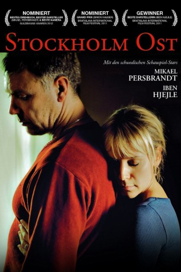

#4937 Stockholm Ost
 
 IMDB-Wertung: 6.1 / 10
IMDB-Wertung: 6.1 / 10  Metascore: 0
Metascore: 0 
Johan (Mikael Persbrandt) ist ein recht normaler Mittvierziger, dessen Leben an einem Morgen plötzlich aus den Fugen gerät. Als er gerade wie gewöhnlich auf dem Weg zur Arbeit ist, überfährt er ein kleines Mädchen. Noch an der Unfallstelle erliegt das Kind seinen schweren Verletzungen und Johan stürzt in eine tiefe Depression. Vor lauter Schuldgefühlen sieht er sich auch nicht mehr in der Lage zu arbeiten. Auch die Mutter des Kindes, Anna (Iben Hjejle), kann mit dem Tod der Tochter nicht umgehen und verliert sich nach und nach in einer Traumwelt, in der ihr Kind noch lebt. Eines Tages treffen Johan und Anna am Ostbahnhof in Stockholm zufällig aufeinander und lernen einander kennen. Johan weiß, dass Anna die Mutter ist, doch sie weiß nicht um seine Beteiligung am Unfall. Nichtsahnend verliebt sie sich in ihn und Johan muss sich nun erneut den schweren Gewissensbissen stellen…
Jahr: 2011
Dauer: 91 Minuten
FSK:
Land: Schweden Studio: Edel Media & EntertainmentTonspuren:
Untertitel: Deutsch,
Auflösung: 1080p (1920x1040) Größe: 8140 MB
Genre: Drama
Regisseur: Simon Kaijser
Drehbuch: Haidar Ali
Soundtrack:
Darsteller:
 Mikael Persbrandt als Johan
Mikael Persbrandt als Johan Iben Hjejle als Anna
Iben Hjejle als Anna Henrik Norlén als Anders
Henrik Norlén als Anders Annika Hallin als Minnas mamma
Annika Hallin als Minnas mamma Jimmy Lindström als Minnas pappa
Jimmy Lindström als Minnas pappa- Liv Mjönes als Kattis
- Lars-Erik Berenett als Kattis pappa
- Anki Lidén als Kattis mamma
- Ulf Friberg als Nybliven pappa
- Rebecka Englund als Nybliven mamma
- Anna Godenius als Åklagare
- Peter Parkrud als Terapeut
- Zardasht Rad als Pappa på station
- Pierre Tafvelin als Granne på julfesten
- Chatarina Larsson als Barnmorska
- Björn Wahlberg als Läkare
- Astrid Assefa als Sköterska
- Moa Zetterlund als Minna
Datei: X:\2011(N-Z)\Stockholm Ost (2011, FSK, 1920x1040).mkv seit 02.12.2016
Festplatte: HD 2011(G-Z)
 Es gibt insgesamt 132 Filme in der Gruppe '2011(N-Z)'
Es gibt insgesamt 132 Filme in der Gruppe '2011(N-Z)'